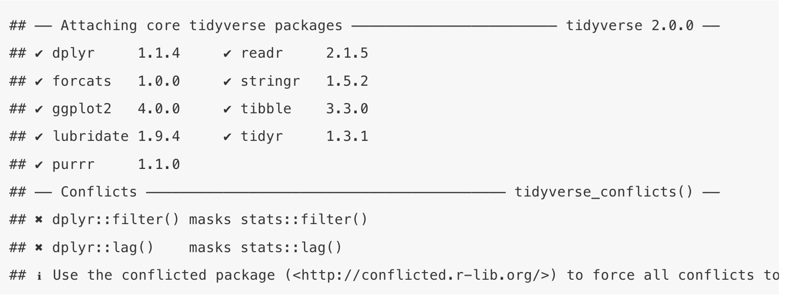
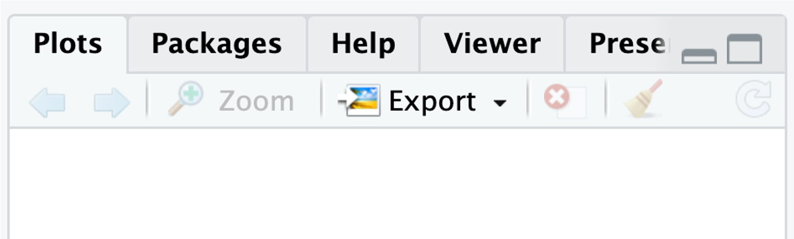

Ozone Solar.R Wind Temp Month Day
1 41 190 7.4 67 5 1
2 36 118 8.0 72 5 2
3 12 149 12.6 74 5 3
4 18 313 11.5 62 5 4
5 NA NA 14.3 56 5 5
6 28 NA 14.9 66 5 6(Re)introduction to R (Lecture 3)
About R
R is primarily used for statistical analysis and graphics development, including
Data handling and manipulation
Data analysis
Data visualization
R is open source, and anyone can create functions
- As a result, R is a composite of packages (i.e., set of related functions) that many independent developers created
About R Studio
While R is a computer language, RStudio is an Integrated Development Environment (IDE)
Provides a more user-friendly interface when coding in R
Note! You don’t have to use RStudio to run R code; but it will make it much easier to develop your R code
Installing R and RStudio on your computer
This is the recommended approach
Choose your operating system and then download and install R from UM’s CRAN site:
Choose your operating system and then download and install R Studio from POSIT:
Then we can start to configure R Studio for your analyses
Running R and RStudio remotely via Virtual Sites
This is not the recommended approach
Log in to Virtual Sites
Get yourself configured to save your files on Virtual Sites
Setting your working directory
When you first open R, your working directory is your entire computer
You can specify a particular folder to work from using the set working directory command
setwd()
For instance, on a Mac, if my username is “industrialhygiene”, and I have a folder under the file path Documents > Coding > EHS655 where I plan to do my R analyses:
setwd("/Users/industrialhygiene/Documents/Coding/EHS655")
Importing the EHS 655 dataset
Now if I read a dataset file (“dataset.csv”) I can simply call the dataset filename directly since my RStudio already knows to look in the “EHS655” folder:
read.csv(”dataset.csv")
If I did not set my working directory already, I would’ve needed to read the file using the entire file path:
read.csv("/Users/industrialhygiene/Documents/Coding/EHS655/dataset.csv")
Loading packages in R
All functions to run a particular command in R are stored in packages
- If you want to install a new package to use additional commands, you will have to install and load them into your environment manually
For example, base R does not have the ability to read Excel files. In order to do this, you will have to first download and install the
readxlpackage:install.packages("readxl")
To load (use) the package you will then use this command:
library("readxl")Note! You will have to run the
library()command every time you open your RStudio to use the loaded functions.
Boolean operators
A form of logical values (i.e., TRUE or FALSE) using:
>: greater than>=: greater than or equal to<: less than<=: less than or equal to==: equal to!=: not equal to
Tidyverse
While base R code is incredibly versatile, most R users utilize the
tidyversepackage for data wrangling, visualization, and simple analysisTo install and load the
tidyversepackage:install.packages("tidyverse")library("tidyverse")
More on tidyverse
The tidyverse is package that loads multiple packages that work in harmony with each other.
dplyr- for data wrangling and manipulationforcats- for reordering factor variablesggplot2- for data visualizationlubridate- used for handling date and time datapurrr- a functional programming toolkitreadr- for reading data filesstringr- for handling string variablestibble- provides better formatting for data framestidyr- provides tools to handle tibble-formatted data frame
Exploring tidyverse with air quality data
To demonstrate the basic features of the tidyverse packages, we will use the airquality dataframe that is pre-loaded into base R
We will store this dataframe under the name aq_df
Air quality example: data frame and tibble
Let’s view what the dataset looks like
We can view what class of dataset this is
[1] "data.frame"This shows the dataset is stored in R as a data.frame, not a tibble. We can change this using the as_tibble() function
Pro tip: use the up arrow in the command line to scroll to last command
So, what’s a dataframe, and what’s a tibble?
Data frame
Two-dimensional, table-like data structure designed to store tabular data
Columns can contain different data types like numeric, character, logical, etc.
Each individual column must have the exact same type of data in all of its rows
Every column must have a unique name
Tibble
Basically what the tidyverse calls a data frame
From https://tibble.tidyverse.org/:
- “Tibbles are data.frames that are lazy and surly: they do less (i.e. they don’t change variable names or types, and don’t do partial matching) and complain more (e.g. when a variable does not exist). This forces you to confront problems earlier, typically leading to cleaner, more expressive code.”
Air quality example: arrange function
Air quality example: select function
Air quality example: filter and mutate functions
Air quality example: the pipe operator (%>%)
Now let’s look at our data. First stop: the R script
What is an R script?
- It’s a blank R file that will allow you to execute commands in a sequential manner
Why use a script?
Ease of manipulation of data
Documentation of manipulations and analyses
Preserve original data file
I’m forcing you to
Pro tip: work along with me in your R script and SAVE YOUR CHANGES
Creating an R script
Create a new file, type R script
First thing to do is set the working directory. Example:
setwd("/Users/rneitzel/Library/CloudStorage/Dropbox-UniversityofMichigan/Rick Neitzel/R Workshop")Note: this is for a Mac; Windows format will look different
Next, let’s make sure tidyverse is installed:
install.packages("tidyverse")Note: when to use quotation marks in R is still a mystery to me; we’ll get through it!
Creating an R script
Next we want to actually use the
tidyverseandreadxlpackagesPro tip for R scripts: document, document, document
You can do this by placing a
#in front of your text to tell R this is a note, not codeR will recognize this and display text after the
#in greenExample:
Now we can load our data file
- Note: R will look for this file in your working directory; make sure it’s saved there!
Creating an R script
Now let’s save our dataframe as a tibble
Congratulations! Our dataset is loaded and ready for exploration
Some basic exploration
# A tibble: 6 × 36
`Subject-ID` `Job-title` Gender `Measurement date` `Site-type` County
<dbl> <chr> <chr> <dttm> <chr> <chr>
1 1 Laborer M 2010-01-04 00:00:00 Civil King
2 2 Laborer M 2010-02-03 00:00:00 Civil Pierce
3 3 Laborer M 2008-06-01 00:00:00 Commercial Pierce
4 4 Laborer M 2010-06-15 00:00:00 Commercial Snohomish
5 5 Laborer Male 2011-10-02 00:00:00 Road Kitsap
6 6 Laborer Male 2010-11-15 00:00:00 Road Thurston
# ℹ 30 more variables: `Age-baseline-years` <dbl>, `Work-LEQ-dBA` <dbl>,
# `Measured-shift-length-mins` <dbl>, `Post-cal-value-dBA` <dbl>,
# `Perceived-type-of-noise-shift` <chr>, `Perceived-noise-level-shift` <chr>,
# `LMAX-dBA-shift` <dbl>, `Primary-task-shift` <chr>,
# `Other-nearby-noise-shift` <chr>, `Usual-shift-length-hours` <dbl>,
# `Usual-hours-worked-per-week` <dbl>, `Usual-weeks-worked-per-year` <dbl>,
# `Primary-task-study` <chr>, `Perceived-type-of-noise-study` <chr>, …Exploring the dataset
R can show us what’s in the dataset graphically
You can also see all of the commands you’ve run in this R session

Let’s interact with the data a bit
Let’s limit the number of variable we’re looking at to just the first 8
Note: we can select any number and selection of variables this way
Note: we don’t have to save changes (first line) – just showing this for clarification for when you do might want to save changes (for instance, when you create a permanent new variable)
Note: when there are spaces and weird symbols in a column name (e.g., a dash), you have to use the backward tick symbol (`) around your column name to call it. Otherwise, you don’t need it (like when we call the County variable). We will discuss how to clean up column names later.
Now let’s sort by measurement date instead of subject ID
Let’s interact with the data a bit
And then back to sorted by subject ID
Display data types
tibble [201 × 7] (S3: tbl_df/tbl/data.frame)
$ Subject-ID : num [1:201] 1 2 3 4 5 6 7 8 9 10 ...
$ Job-title : chr [1:201] "Laborer" "Laborer" "Laborer" "Laborer" ...
$ Measurement date : POSIXct[1:201], format: "2010-01-04" "2010-02-03" ...
$ Site-type : chr [1:201] "Civil" "Civil" "Commercial" "Commercial" ...
$ County : chr [1:201] "King" "Pierce" "Pierce" "Snohomish" ...
$ Age-baseline-years: num [1:201] 32 30 27 28 34 33 27 26 30 32 ...
$ Work-LEQ-dBA : num [1:201] 91.1 91.4 92.3 92 94.8 94.3 90.8 91.1 84.9 85.4 ...List variable names
[1] "Subject-ID" "Job-title" "Measurement date"
[4] "Site-type" "County" "Age-baseline-years"
[7] "Work-LEQ-dBA" Identify unique values in a variable
[1] "Laborer" "Lborer" "Laboerr"
[4] "Electrician" "Electrican" "Carpenter"
[7] "Carpentr" "Operating engineer" "Operaing engineer"
[10] "Ironworker" "Ironworkr" Some basic analysis commands in R
A few other things about R
Help is available (but a search engine will likely give you better results)

That’s enough for today
Questions?